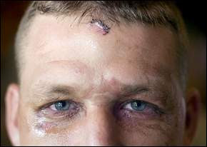
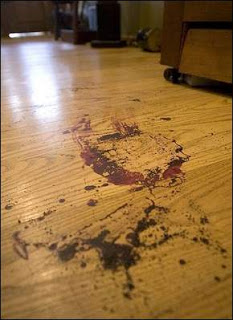
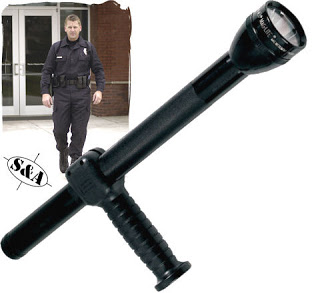

You've been protected and served! Josh Adams displays the wounds of honor he received while attempting to protect his wife from a criminal police assault. The injury was inflicted by a police-issue Maglite flashlight (see below a photograph of the bloodstains left on the floor of the Adams' home.)
Owing to budget shortfalls, Beaver Village, Ohio (pop. 464 as of the most recent census) disbanded its police department for several years, relying instead on the Pike County Sheriff's Department to handle emergency calls.
About a year ago, the village repudiated its blessing by reconstituting its police force, which consisted of Chief Daniel Seal, auxiliary officer Brady Ratzlaff, and officer trainee Adam Mather.
I say “consisted” because last Monday the entire force was suspended after an October 7 incident in which local resident Steve Adams was forced to make a 911 call to the Pike County Sheriff begging for help because “the cops beat my son up.”
(Listen to the call here.)
“Are the police there now?” asked the 911 operator, audibly puzzled that someone would be calling the Sheriff to intervene with the police.
“The police are there and they just beat my son up!” repeated Adams, his voice colored with exasperation. “The f****n' Beaver Police.”
As recounted in the Chillicothe Gazette, the police arrived early Sunday morning following an Oktoberfest celebration. Apparently, somebody in the village had been setting of firecrackers late at night, an act of unsanctioned civic exuberance that would have dramatic consequences for Josh Adams and his wife.
After midnight on Sunday morning, Josh, 34, and his 31-year-old wife Christina had tucked their three small children into bed. Christina noticed lights in her driveway an instant before hearing a loud, insistent knock. She opened the front door to find three men standing outside – the much-heralded Beaver Police.

“They asked me what's going on,” recalled Christina, a nursing student at Ohio State's Chillicothe extension. “I told them I have no idea what's going on, you tell me. They told me they saw me on my porch shooting a shotgun.”
This struck Christina as exceptionally odd, since she had never fired a gun in her entire life. Since the police hadn't presented a warrant or identified her as a criminal suspect, she did exactly the right thing: She denied them access to her home.
“I never even stepped out on the porch,” Christina continues. “I cracked the door to look out.... I told them I'm not telling you anything, I'm going to get my husband.”
Now, at this point, if the police had been concerned that Christina had been repelling an intruder, they should have said so, politely. If they suspected her of committing a crime, they should have said so, politely. In either case, what happened next was not police work, but an armed home invasion and assault on an innocent young couple.
Rather than waiting for Christina and her husband to return to the door, Chief Seal violated the family's property by placing his foot in the door (a tactic I've seen police use on many occasions) and then slamming it open. He then attacked the terrified young mother, tackling her to the floor.


When Josh came into the room and saw an unidentified man molesting his wife, he would have been within his legal and moral rights to shoot him dead, assuming he could do so without injuring Christina. Unarmed at the time, Josh ordered Seal to get off his wife. One of Seal's homiez responded by clubbing Josh in the head with a Maglite flashlight and then spraying him with mace. Beaver's “Finest” then handcuffed the couple and left them on the floor of their home.
At some point during the assault, Josh's cellphone fell out of his pocket. Christina was somehow able to flip it open and dial Josh's father, Steve, who lived nearby.
When he arrived to see three individuals standing over his prone and bleeding son and traumatized daughter-in-law, Steve understandably exclaimed: “What the hell are you doing?”
Ever zealous to protect and serve, one of the Beaver Police snarled, “Do you want to go to jail?”


Call it the "T.J. Hooker Model": A weaponized Maglite flashlight.
Steve then proceeded to make the 911 call, which summoned the Sheriff's Department and Mayor Rocky Brown. With their intervention Josh and Christina were released. Although Seal and his heroic sidekicks were suspended – much to Mayor Brown's dismay – no charges were filed in the incident. At a minimum, the three Beaver Police officers should be charged with felony assault.
Josh believes that the police were on the prowl for the elusive kids who set off the fireworks earlier that evening. “I feel like they were out to get someone that night ... there was no explanation,” he told the local paper. “It seems to me they were aggravated they couldn't catch these kids down here.”
For her part, Christina described her family's experience as “like something you see on TV” -- such as “COPS,” for instance, or “Dallas SWAT,” or any of the other “reality” programs that indoctrinate the public in the gospel of righteous police violence.
We could call this the “Showtime Syndrome”: Mimicking the behavior displayed by police in “reality” programs of this sort, many police clearly lust for an excuse to use overwhelming force in situations where it is clearly unjustified.
While Josh and Christina nursed their wounds, another couple – Richard Silva and his fiancee, Blair Austin – were dealing with the aftermath of their own “Showtime” experience, which took place on September 28, Richard's birthday.
Richard, who works as a federal contractor overseas, had just returned to Charlottesville, Virginia from three years in Afghanistan and Iraq. He and Blair were crossing the street on their way to a local restaurant when a Charlottesville Police SUV came roaring down the street on a collision course with several pedestrians in the crosswalk.
According to witnesses, the SUV's running lights were on but not its siren. Austin also recalls that the driver made a turn without a signal. Several pedestrians scrambled out of the way before the police vehicle came screeching to a halt a few feet in front of the crosswalk.
Startled and angry over what could have been a multiple-fatality accident, Richard Silva lost his composure, yelling something either “Slow your a**!” down, or “Slow the f*** down,” or some other outraged command of that flavor.
Whereupon the heroic Officer Mike Flaherty of the Charlottesville Police almost certainly said to himself: “It's Showtime!”

Flaherty erupted from the SUV, seized Richard, and then began to handcuff him. Blair, who was wearing a formal dress and high heels, exclaimed, “Why are you arresting him?”
According to eyewitnesses, Flaherty replied to that inquiry by shoving Blair with both hands, knocking her flat on the asphalt.
“She hit [the pavement] so hard she spun to the ground,” attests Anjani Solonen, who was with a group of four students from nearby Liberty University.
“He hit her hard enough that it would have knocked me down,” added Chris Ryan, a friend of the couple.
As the cuffs were being put on Richard Silva's wrists, eyewitness Carrie Stuart yelled: “Don't you dare arrest that man – he did nothing wrong!” At about the same time, Blair had regained her footing and was making the same demand. The latter gesture prompted the bold and intrepid Officer Flaherty to instruct a back-up officer to arrest Blair, presumably for the crime of being on the receiving end of an unprovoked police assault.
A crowd of outraged witnesses had materialized by this time, some of whom dialed 911. The above- mentioned Chris Ryan collected relevant details and explained the incident to Sergeant Shawn Bayles, the midnight shift supervisor, who ...
... wait for it ...
... wait for it...
“...supported Flaherty's actions.”
After all, the department explained to the local newspaper, The Hook, Flaherty “is an experienced policeman" with a “good reputation” among his colleagues.
Aren't they all?
Sgt. Bayles also offered one reflexive comment that left Ryan puzzled. After Ryan described what had happened, Bayles replied: “Well, to tell you the truth, we've had a lot of problems with a lot of the young liberals going to college causing problems.”
The "liberals" in this particular instance, of course, were students from nearby* Liberty University -- surely the Mecca of campus leftism.
Richard and Blair were held in jail overnight. He was charged with “public swearing and intoxication,” and faces a $250 fine. Astonishingly, Blair, whose only “offense” was to demand that the police leave her fiance alone, was charged with “obstructing justice without force,” for which she confronts a $2,500 fine and a year in jail.
Remember, she's the one who was assaulted by Flaherty, the gallant Blue Knight sans pareil. A medical examination found that Blair had suffered injuries comparable to those experienced in a car crash.
Several of the eyewitnesses – including, once again, students from that bastion of tie-dyed cultural Marxism, Liberty University (more accurately called Jerry Falwell U.) – offered to testify on behalf of Richard and Blair. In that fact we can find a faint but precious flicker of hope. The same is true of the fact that this time, after so many recent episodes of unalloyed police barbarism, someone was at least willing to confront the police in the middle of their rampage.
Recalling the crowd's reaction as Flaherty shoved Blair to the ground, Chris Ryan remarks: “I though there was going to be a damn riot.”
There damn well should have been. It's long past time that we put the “riot” back into patriotism.
(Thanks to Jeri Lynn Ward, J.D., for tipping me to these stories.)
... courtesy of Radley Balko.
Common citizens, from the point of view of the State's armed enforcers, are literally worth less than dogs.
A Pittsburgh man was arrested and held on $100,000 bond for the supposed crime of yelling at a police dog to shut up.
The man was charged with "taunting a police officer."
"A police dog is a police officer. There is no difference under the law," belched Criminal Court Justice Gene Ricciardi. "They are not pets and they are trained in the purposes of law enforcement and anyone who would taunt a police officer can be considered a threat to the community."
Does this mean a police officer -- whether human or canine -- can defecate on my yard with impunity? Well, why not?
Please be sure to visit The Right Source and the Liberty Minute archive.
_____________________________________________________
*Thanks to DixieDog, a frequent contributor on our comments thread, for his timely and useful clarification. And thanks once again to Jeri Lynn WARD, not "Ryan," for catching a particularly embarrassing typo.
Ah, the perils of being one's own editor... and trying to type with two lovely young girls, ages 4 and 2, clinging to an arm apiece....
Dum spiro, pugno!
35 comments:
True, there should've been a riot in this case, but at least I'm heartened by the outrage exhibited by eyewitnesses of this thuggery in action. I don't think you'd see similar outrage on a New England town's street, but I could be wrong.
Like I've mentioned in the past, the booby dramas are for indoctrination:
I've noticed an ominous trend on the booby these days. There seems to be an endless parade of pro-police documentaries SWAT, COPS, Shootouts, Car Chases, Most Scariest…[insert activity], etc., etc., ad nauseam. Yes, COPS has been on the booby for years, but it just seems that there's now a plethora of COPS-like shows on the booby, many more so than in the past. I think these programs are produced for the implied purpose of subduing the commoner mind and to accede to to the state's preeminence and power without question.
It's working for the most part, since very little mainstream media disclosure occurs. You and a few outlanders "on the fringe" are the only ones screaming about these outrages! And something else that's quite obvious if you pay careful attention is that when it's a minority, a gay, or some other "protected" or hyper-sensitive group, the media is all over the scene.
BTW, as a sub-minor note, Liberty University is in Lynchburg, but I reckon one could say it is sort of "nearby" I guess, being only about 65 miles away from Charlottesville. The University of Virginia, however, is actually in Charlottesville ;).
Just sayin'.
D.D. -- Thanks for the very kind correction of my dodgy Virginia geography!
Would "Ryan" be the last name of a possible future husband that I haven't met as of yet? That would be nice.
:)
Uh, yeah ... that's it; I went all Sybilline there for a second, and foretold your future!
Sure, that's EXACTLY what happened. It had NOTHING to do with some Trek-dork Freudian slip resulting in the transposition of your name with that of the actress who filled the role of "7 of 9" on "Star Trek: Affirmative Action She-Captain"!
I swear it on my stack of Gold Key Star Trek Comic Books, taken with my hand splayed into the painful Vulcan salute!
Will;
I know you've seen THX-1138. Well, in the movie, when THX is in his apartment he is watching a video of a violent beat down of a woman by the robot police force and he is masurbating to it.
I found that image very disturbing then, as I still do today. I tell you what, George Lucas almost got it exactly right and that's scary.
Back when that movie came out, it was very rare to have the kind of police brutality that seems too common today. I know there have been racial riots and police brutality to minorities, but it has spilled over and now average Joes and Janes are getting the treatment. This may ultimately be a good thing in the long run, but it is no less sad and outrageous.
This does not bode well for our country my friends, when the LEOs feel entitled to do this and expect it to all be covered up and forgotten. This kind of crap is only supposed to happen in the movies, not here. The tragic reality of the silence among law enforcement is truly deafening and obscene. Good work Will.
I'd say I'm surprised by the amount of incidents you post about which occur in Ohio, but I live in Ohio. No surprise to me.
I'm surprised the thugs in these two incidents didn't pull out their tasers on the spot and engage in torturing the "criminals."
They probably would have been "promoted" to a position at DHS.
In the instance of the home invasion, Will is right; using lethal force against those miscreants would have been wholly justified.
And Blair Austin being ground into the asphalt, well, I just can't come to terms with letting that go unpunished. That robocop should have been terminated immediately after the initial eyewitness testimony was heard.
Additionally, he should be charged with assault. The back-up officer should be dismissed as well, for the officer stood by, witnessed the assault on Austin, and failed to do anything to stop it.
Wearing a badge and donning a uniform does not exempt one from the law, especially the moral law.
'Mom' and 'Dad' banished by California
http://www.worldnetdaily.com/news/article.asp?ARTICLE_ID=58130
http://www.newswithviews.com/NWV-News/news11.htm
Our government masters and their henchmen get more outrageous with each passing day. You've got to wonder how much more the Amerikan public will tolerate. Probaby a lot more, since from the first day to the last day of their government run education, they are brainwashed to worship the state. What can you expect when they start each day by pledging allegiance to these government thugs.
So Mr. Silva goes overseas to partake in the great "Democratic Jihad" in Afghanistan etc. only to return home and be man handled and his date tossed like a rag doll? Makes you wonder what sort of freedoms on the home front are being defended. I suppose it's the freedom to shut up and do as you're told.
Mr. Grigg,
If you do NOT want the 'Astrological Sign' and 'Zodiac Year' to appear on your blogger profile... You should be able to remove them by editing your profile and removing/deleting your birthdate information...
:-)
Dum spiro, pugno...
Being a home schooling father, and having taught Latin in that role, and since many readers are the sad products of outcome based education and "no child left behind" here is the meaning of Brother Grigg's moto:
"While I breathe, I fight"
(It helps, too, that being a native South Carolinian, I know my state's moto, "dum spiro, spero" =while I breathe, I hope")
The more reports of this sort which I hear about, the more I am inclined to accept the theory that some police officers and mad dogs are interchangeable in behavior. Certainly, that observation does not apply to all of them but as many of them become more militarized and regard citizens as the enemy, logic requires that we look at them in the same way and treat them in that manner as much as possible.
Check out,
BUSTED: The Citizen's Guide to Surviving Police Encounters at
You can view it for Free on YouTube, Google Video and Myspace Video
Just like the Martha Stewart case, obstruction of justice. If you are falsely accused and make the attempt to defend yourself....you are charged with obstruction of justice. This is a trend that is happening more and more.
Here you go, William. Another one.
http://www.ajc.com/metro/content/printedition/2007/10/15/coparrested1015.html
negator said...
"...I know there have been racial riots and police brutality to minorities, but it has spilled over and now average Joes and Janes are getting the treatment...."
Thanks, negator--I'm sure that victimized racial minorities will be glad to know that they aren't "average Joes and Janes"--above average, perhaps?
Reminds me of the comment from a west coast police chief years ago, that black people didn't respond to chokeholds the way "normal people do."
Thank you, Mr. Grigg, for your fine blog and for highlighting the mounting problem of the militarization of our society. And thanks, specifically, for giving me a platform to speak my mind on an issue I've thought about over and over!
I initially should mention something that will clarify my views. I do know the workings of the Constitution and the laws that have developed over the last couple of hundred years, as I have been both an assistant Attorney General and worked as an attorney for my state's highest court for over 25 years reviewing literally hundreds, if not thousands, of fourth amendment claims. (One of the more popular bases for criminal defendants' appeals.) Having worked on behalf of the State criminal judicial system, I certainly have no love for criminals and their evil ways. (Surely no one does, and that, of course, only needs emphasis for the benefit of those who cannot think clearly about the issue of individual rights.)
That said, I'd like to comment on the TV program "COPS." It's been years since I've seen any kind of a TV show, but one aspect of the COPS program that I recall most, from when I did watch the tube, is how the producers choose scenes that feature the police wantonly violating suspects' rights to be free from unlawful searches and seizures under the fourth amendment. After watching the show more than a few times, I formed the opinion that the producers were intent on inculcating the view in the public that such searches and seizures were not only normal but lawful. (Recall that, unlike Jack Webb's "Dragnet," they never show the results of prosecutions, if any.)
It appears the show is being used, primarily, to acclimatized the public to the removal of its constitutional rights in the name of "peace and safety." Tellingly, the producers open each segment, spending valuable airtime, with an interview of the officers in a way that portrays the officers as ordinary citizens just wanting to help their communities, while spending the rest of the show demonstrating the suspects as scum-of-the-earth losers. Add to the mix commercials "selling the dream," and you have brainwashing at its finest. After all, how can a good citizen ever realize the dream of possessing that fine Cadillac when scum like those are prowling the streets? Unless, of course, police are given carte blanche to restrain those element of the public who might someday scratch and dent that fine machine.
hmm, you need a tipline so you can publicize more incidents like this...here's one about a 14 year old boy with sickle-cell being killed by guards:
http://healtheland.wordpress.com/2007/10/13/martin-lee-anderson-the-state-gets-away-with-murdering-the-poor-again/
I submitted this story to Digg: http://digg.com/political_opinion/Showtime_Syndrome_Cops_Violently_Mimicking_the_Violent_Cops_On_TV
Excellently written and reasoned. If you'd like to join a community of liberty lovers like yourself, check out http://www.freestateproject.org/
On Oct 10th or thereabouts I read in a Seattle newspaper about some jaywalkers near the sports collisium who were attacked by police and thrown to the ground. The police were in an unmarked car and their persons were not readily identifiable as police, and did not identify themselves. The people being attacked by the police fought back as any normal people would.
In a truly free society, those witnesses would not just have gotten angry, they would have pulled those cops to the ground and beaten them half to death.
I thought it was common knowledge that the reason so many cops are violent is because of their culture of steroid abuse. Perhaps we need a federal law mandating that all police be tested for steroids at least once per month.
I wonder at what point the frog realizes he's been boiling... there are 7 million Americans in the prison system. 2 million behind bars and 5 million on parole. I suspect the inmate numbers are sky-rocketing. At what point do you conclude you are living in a police state? Where is your line in the sand? You have none. It's wishful thinking to keep thinking it always happens to some other poor bastard. I had my close call with "the law" in Seattle in 2003 and called it quits. I live in Hong Kong now and have never looked back. I just wish they would depeg the Hong Kong dollar from the US dollar because you think it's bad now... just wait till _that_ calamity strikes. At least in Hong Kong banks you have the option to own foreign currency accounts and can trade money across accounts without any penalties or fees whatsoever. Amazing isn't it? Freedom anyone? Never mind. Hope to catch you again on Antiwar Radio William. Maybe speculate on some great countries to emigrate to. I could name a few. It never strikes Americans that other countries are an alternative. Most people have never traveled. America has 2 great assets, it's people, and the country itself. But what does it matter while it's saddled with the most brutal oppressive political regime in the western world? Get out while you can people.
Exactly why I keep an AK-47 propped behind the front door.
All cops should be on camera 24/7
If they're not doing anything wrong, then why would they object?
Obstruction of justice. Someone said something about the obstruction of justice. That is a key concept. Justice. That is a concept that is increasingly disappearing. Justice. One key question to ponder is just exactly who is obstructing justice. Often enough it will be those who are charging you with obstruction of justice. It is they who are obstructing justice. Examine it. See if that is not the truth.
"...the mounting problem of the militarization of our society."
No, it's actually the militarization of our government alone. The 'people' aspect of society are being de-militarized with more restrictive firearm
"laws" and are encouraged to view weapons, especially firearms, as the exclusive instruments of the state. It has been extremely clear for a number of years now that this government is working to establish the "legal" parameters through which the state would monopolize the "lawful" use of force, barring all else from their "rightful" domain; and once they finally achieve that end, we will end.
This Blog shows a typical lack of knowledge about what really goes on for your typical patrol cop. While I would be the last to claim that abuse of authority never occurs within the police ranks, your post provides no evidence for the flood of tyranny you claim.
Your three examples(out of the hundreds of thousands LEO's on shift every day) are outstanding examples of selective editing. You neglect to mention that the female in your first story was placed under arrest. This was not an example of house being invaded without a warrant, this was someone resisting arrest. Although you give give automatic credence to the story told by the complainant, you refuse to consider that, perchance, someone might reshape the facts or simply lie. Whatever the case, the fact remains that if a subject refuses to submit to an arrest, you do not have a choice about using force to make them comply. It's not always pretty and it's not supposed to be.
In your second example you neglect that Mr Ryan said "that's what he's supposed to do", while quoting whatever parts of this story that work well with your version of events. What seems highly probable (and this is only conjecture based on my experience with this job) is that the officer was attempting to affect an arrest when someone got into his space, touching him and attempting to prevent it. In such a case, the officer is going to instantly disengage the accosting subject. I know you do not consider highly the risks taken by the officers on patrol in a typical beat, but they are considerable.
And for the third, you also conveniently left out the fact the subject threatened to "shank" the K9. That is an illegal threat whether given about a police dog or the neighbor's Fido.
The criminal element is much more vicious than you seem to want to realize. The response of patrol rifles and other such "militarization" of police forces is a reaction to the level of violence already in place.
Whether you are claiming that officers need to give warning shots or that shooting out the tires of a vehicle is a viable consideration, you seem to not consider the dangers faced by officers constantly across the nation. You need to realize what it's like to haul butt to a call (with your lights on and siren off, many people can't hear you and you often don't want to let the the person you're about to deal with know you're coming) pull up and see three men raping the female, and have them look you in the eyes and say "F--- you pig I'm going to kill you and watch you bleed out" while you realize that they are about to try to do just that. And after you do that, you need to finish a beat, just one more call to write up. . .
Let's first slay the idea that police work is as extravagantly dangerous as HPD would have us believe. The militarization of police is NOT a reflection of a surge in "the dangers faced by officers constantly in our nation."
That conceit makes for gripping TV. It makes for piss-poor policy.
Joseph D. McNamara, a former police chief in Kansas City and San Jose, and a former New York City beat cop, puts matters in perspective:
In 2006, McNamara observes, 51 officers were killed in the line of duty “out of some 700,000 to 800,000 American cops. That is far fewer than the police fatalities occurring when I patrolled New York's highest crime precincts.”
So -- why the militarization of police, and the ever-escalating use of "shock-and-awe" tactics in situations that DON'T call for them?
“Simply put, the police culture in our country has changed,” insists McNamara. “An emphasis on `officer safety' and paramilitary training pervades today's policing, in contrast to the older culture, which held that cops didn't shoot until they were about to shoot or be stabbed. Police in large cities formerly carried revolvers holding six .38-caliber rounds. Nowadays, police carry semi-automatic pistols with 16 high-caliber rounds, shotguns and military assault rifles, weapons once relegated to SWAT teams facing extraordinary circumstances."
The same is true of tasers, beanbag rounds, pepper spray, weaponized flashlights, and all the other kewl 'n' bitchin' toyz our tax dollars are buying for the stalwart heroes in blue.
"You neglect to mention that the female in your first story was placed under arrest. This was not an example of house being invaded without a warrant, this was someone resisting arrest."
"YOU neglect to mention that all charges were dropped, and that neither of the victims of police violence was taken into custody -- as soon as practicing adults intervened.
Which means, of course, that the victims -- not "perps," or even "suspects," VICTIMS -- were JUSTIFIED IN RESISTING THIS NEEDLESS AND LAWLESS ARREST.
"Although you give give automatic credence to the story told by the complainant, you refuse to consider that, perchance, someone might reshape the facts or simply lie."
People lie all the time -- both suspects and police. The lies of the former are generally prosecuted; those of the latter are generally considered self-ratifying.
"Whatever the case, the fact remains that if a subject refuses to submit to an arrest, you do not have a choice about using force to make them comply. It's not always pretty and it's not supposed to be."
Until VERY recently, it was well understood that citizens had the RIGHT and the DUTY to resist an unjust arrest. This is a subject to which I'm sure I'll return.
"[Y]ou also conveniently left out the fact the subject threatened to `shank' the K9. That is an illegal threat whether given about a police dog or the neighbor's Fido."
And YOU conveniently omitted mention of the fact that the dog assaulted the young man by growling at him in a threatening fashion. (If we're going to anthropomorphize the K9, we might as well go all the way.) The "threat" was the predictable, if ill-considered, reaction of a scared kid.
Do you REALLY expect us to believe that the kid would have been charged with a crime if he had reacted the same way to a privately owned pet? The officials in the story certainly didn't think so; the judge insisted that the dog was a police officer, just like a human cop. I'm genuinely surprised that you didn't take offense at that characterization, so zealous were you in your reflexive tribal loyalty to the tax-consuming caste to which you belong.
Cops are just average human beings.
President Bill Clinton said that, if he could, he would make ordinary citizens yet more dependent upon police protection than we are today -- by outlawing handguns -- if only the country were ready for it. And he added 100,000 federally funded cops to the streets. (If you think you have no say about the way local cops behave, just imagine if the police took orders only from Washington.)
I prefer to rely, as much as possible, on legally armed neighbors (who prefer to mind their own business) to deter burglars and muggers from working my neighborhood. Your example shows why this is better than sending cops around to look for trouble.
I am GLAD I don't live in Ohio! What a defecation situation! LOL.
This is why we ALL need to put our 2nd Amendment FIRST!
-Wendy Weinbaum
1OiTzd Your blog is great. Articles is interesting!
The blue gun thugs are much the same everywhere. Just this week in our town they assaulted, beat up, and then shot a man for the "crime" of minding his own business while walking down a street in Liberty Lake, WA. The violent, out of control blue suited gun thug gangs are the greatest terrorist organization in our land. They destroy far more lives than they protect. They are the antithisis of a free country. We would all be far better off if they were rounded up and impaled in a row down Main Street by mobs of decent citizens.
Bob
Catch More of The World According to Bob at http://bobstruth.blogspot.com
Post a Comment